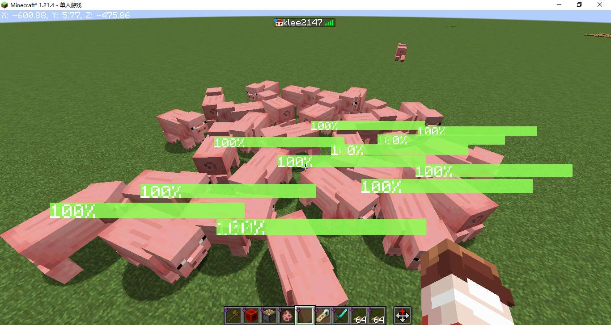
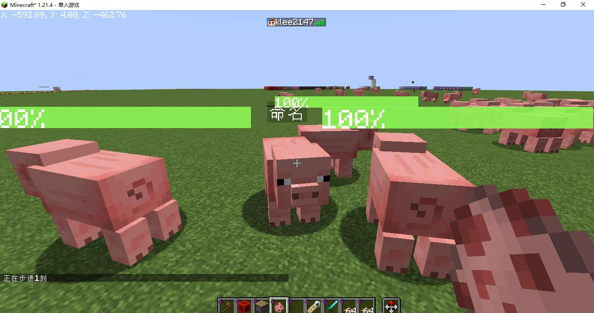

原版血条！
绪论
事情还等从上周说起，那天晚上我安安静静的用我的电脑玩〇神，突然意识到一件事情，在原版MC中无论是生物还是怪物都不给显示血条，这对原版玩家很不友好。
去b站搜索发现，已经有人制作了类似的命令，详见BV1PZfzYCEXy，在原版中能制作出血条缓动确实惊艳到我了，遗憾的是这并不支持java版，于是我制作了适用于java版的血条显示数据包。
它具有以下特性
- 血条缓动效果

- 多生物支持
- 良好的常态性能

- 血条不与生物名字冲突

思路概述
1.血条文本
堆叠“|”字符可以实现简易的血条
1 | /tellraw @a [{"text":"||||||||"}] |
然而我们并不希望血条中间带有空像素，可以在两两字符中间插入负空格解决
这里使用了NegetiveSpaceFont资源包，可以很方便的插入负空格
1
2
3
4
5/tellraw @a [
{"text":"|"},{"translate":"space.-1"},
{"text":"|"},{"translate":"space.-1"},
{"text":"|"},{"translate":"space.-1"}
]1
2
3
4
5
6
7
8
9
10
11{
"newlayer":"",
"space.-infinity":"",
"space.infinity":"",
"space.-max":"",
"space.-8192":"",
"space.-8191":"",
...
"space.-1":"",
...
}1
2
3
4
5
6{
"skapi.healthbar.0":"\udb00\udc01\udb00\udc01\udb00\udc01\udb00\udc01\udb00\udc01\udb00\udc01\udb00\udc01\udb00\udc01\udb00\udc01\udb00\udc01\udb00\udc01\udb00\udc01\udb00\udc01\udb00\udc01\udb00\udc01\udb00\udc01\udb00\udc01\udb00\udc01\udb00\udc01\udb00\udc01\udb00\udc01\udb00\udc01\udb00\udc01\udb00\udc01\udb00\udc01\udb00\udc01\udb00\udc01\udb00\udc01\udb00\udc01\udb00\udc01\udb00\udc01\udb00\udc01\udb00\udc01\udb00\udc01\udb00\udc01\udb00\udc01\udb00\udc01\udb00\udc01\udb00\udc01\udb00\udc01\udb00\udc01\udb00\udc01\udb00\udc01\udb00\udc01\udb00\udc01\udb00\udc01\udb00\udc01\udb00\udc01\udb00\udc01\udb00\udc01\udb00\udc01\udb00\udc01\udb00\udc01\udb00\udc01\udb00\udc01\udb00\udc01\udb00\udc01\udb00\udc01\udb00\udc01\udb00\udc01\udb00\udc01\udb00\udc01\udb00\udc01\udb00\udc01\udb00\udc01\udb00\udc01\udb00\udc01\udb00\udc01\udb00\udc01\udb00\udc01\udb00\udc01\udb00\udc01\udb00\udc01\udb00\udc01\udb00\udc01\udb00\udc01\udb00\udc01\udb00\udc01\udb00\udc01\udb00\udc01\udb00\udc01\udb00\udc01\udb00\udc01\udb00\udc01\udb00\udc01\udb00\udc01\udb00\udc01\udb00\udc01\udb00\udc01\udb00\udc01\udb00\udc01\udb00\udc01\udb00\udc01\udb00\udc01\udb00\udc01\udb00\udc01\udb00\udc01\udb00\udc01\udb00\udc01\udb00\udc01\udaff\udf9c",
"skapi.healthbar.1":"|\udaff\udfff\udb00\udc01\udb00\udc01\udb00\udc01\udb00\udc01\udb00\udc01\udb00\udc01\udb00\udc01\udb00\udc01\udb00\udc01\udb00\udc01\udb00\udc01\udb00\udc01\udb00\udc01\udb00\udc01\udb00\udc01\udb00\udc01\udb00\udc01\udb00\udc01\udb00\udc01\udb00\udc01\udb00\udc01\udb00\udc01\udb00\udc01\udb00\udc01\udb00\udc01\udb00\udc01\udb00\udc01\udb00\udc01\udb00\udc01\udb00\udc01\udb00\udc01\udb00\udc01\udb00\udc01\udb00\udc01\udb00\udc01\udb00\udc01\udb00\udc01\udb00\udc01\udb00\udc01\udb00\udc01\udb00\udc01\udb00\udc01\udb00\udc01\udb00\udc01\udb00\udc01\udb00\udc01\udb00\udc01\udb00\udc01\udb00\udc01\udb00\udc01\udb00\udc01\udb00\udc01\udb00\udc01\udb00\udc01\udb00\udc01\udb00\udc01\udb00\udc01\udb00\udc01\udb00\udc01\udb00\udc01\udb00\udc01\udb00\udc01\udb00\udc01\udb00\udc01\udb00\udc01\udb00\udc01\udb00\udc01\udb00\udc01\udb00\udc01\udb00\udc01\udb00\udc01\udb00\udc01\udb00\udc01\udb00\udc01\udb00\udc01\udb00\udc01\udb00\udc01\udb00\udc01\udb00\udc01\udb00\udc01\udb00\udc01\udb00\udc01\udb00\udc01\udb00\udc01\udb00\udc01\udb00\udc01\udb00\udc01\udb00\udc01\udb00\udc01\udb00\udc01\udb00\udc01\udb00\udc01\udb00\udc01\udb00\udc01\udb00\udc01\udb00\udc01\udb00\udc01\udb00\udc01\udb00\udc01\udaff\udf9c",
"skapi.healthbar.2":"|\udaff\udfff|\udaff\udfff\udb00\udc01\udb00\udc01\udb00\udc01\udb00\udc01\udb00\udc01\udb00\udc01\udb00\udc01\udb00\udc01\udb00\udc01\udb00\udc01\udb00\udc01\udb00\udc01\udb00\udc01\udb00\udc01\udb00\udc01\udb00\udc01\udb00\udc01\udb00\udc01\udb00\udc01\udb00\udc01\udb00\udc01\udb00\udc01\udb00\udc01\udb00\udc01\udb00\udc01\udb00\udc01\udb00\udc01\udb00\udc01\udb00\udc01\udb00\udc01\udb00\udc01\udb00\udc01\udb00\udc01\udb00\udc01\udb00\udc01\udb00\udc01\udb00\udc01\udb00\udc01\udb00\udc01\udb00\udc01\udb00\udc01\udb00\udc01\udb00\udc01\udb00\udc01\udb00\udc01\udb00\udc01\udb00\udc01\udb00\udc01\udb00\udc01\udb00\udc01\udb00\udc01\udb00\udc01\udb00\udc01\udb00\udc01\udb00\udc01\udb00\udc01\udb00\udc01\udb00\udc01\udb00\udc01\udb00\udc01\udb00\udc01\udb00\udc01\udb00\udc01\udb00\udc01\udb00\udc01\udb00\udc01\udb00\udc01\udb00\udc01\udb00\udc01\udb00\udc01\udb00\udc01\udb00\udc01\udb00\udc01\udb00\udc01\udb00\udc01\udb00\udc01\udb00\udc01\udb00\udc01\udb00\udc01\udb00\udc01\udb00\udc01\udb00\udc01\udb00\udc01\udb00\udc01\udb00\udc01\udb00\udc01\udb00\udc01\udb00\udc01\udb00\udc01\udb00\udc01\udb00\udc01\udb00\udc01\udb00\udc01\udb00\udc01\udb00\udc01\udb00\udc01\udb00\udc01\udb00\udc01\udaff\udf9c",
...
}1
2
3
4
5with open("1.txt","w") as f:
f.write("{\n")
for i in range(0,101):
f.write('\t"skapi.healthbar.%d":"%s%s\\udaff\\udf9c",\n'%(i,"|\\udaff\\udfff"*i,"\\udb00\\udc01"*(100-i)))
f.write("}")1
2
3
4
5/tellraw @a [
{"translate":"skapi.healthbar.2"},{"text":"\n"},
{"translate":"skapi.healthbar.50"},{"text":"\n"},
{"translate":"skapi.healthbar.100"},{"text":"\n"}
]
血条叠加也很好实现 1
2
3
4/tellraw @a [
{"translate":"skapi.healthbar.70","color":"yellow"},
{"translate":"skapi.healthbar.40","color":"green"}
]
2.血条及血条缓动计算
需要先将血量转为血量百分比，记录生物当前血量(/data,
Health)和最大血量(/attribute,
max_health)，计算比值获得百分比。
缓动效果也好实现，遵循以下规律
- 如果 缓动血量百分比 小于 血量百分比 则 缓动血量百分比 设为 血量百分比
- 如果 缓动血量百分比 大于 血量百分比 则 缓动血量百分比 减少3
1 | # load.mcfunction |
1 | # tick/_2.mcfunction |
1 | # tick/_2.test.mcfunction |
3.血量显示
使用CustomName在生物头上显示血量 1
2
3
4
5
6# tick/_2.mcfunction
# 显示血条
execute store result storage minecraft:skapi.health args.now int 1 run scoreboard players get @s skapi.health_percent
execute store result storage minecraft:skapi.health args.fade int 1 run scoreboard players get @s skapi.health_temp
function sklibs:health/tick/_3.display with storage minecraft:skapi.health args1
2
3
4
5
6
7
8
9# tick/_3.display.mcfunction
# 四行文本分别为：负空格居中血条，缓动血条，实际血条，血量百分比文本
$data modify entity @s CustomName set value '[\
{"translate":"space.-50"},\
{"translate":"skapi.healthbar.$(fade)","color":"yellow"},\
{"translate":"skapi.healthbar.$(now)","color":"green"},\
{"text":"$(fade)%","color":"white"}\
]'
4.UUID分配
测试发现，濒死的生物无法正常刷新血条，换句话说就是生物播放死亡动画的时间段内无法正常刷新血条，这是因为濒死的生物无法通过@e选择器选中，濒死的生物只能通过@s，UUID，on origin进行选择
解决方案：把要显示血条的实体的UUID放到一个列表里，遍历这个列表，对每个UUID对应的实体进行操作，如果UUID对应的生物不存在则删除这个UUID
注：此处UUID数组转字符串方法来自于卡儿数学库large_number
1
2
3
4
5
6
7
8
9
10
11
12
13# tick.mcfunction
# 注册实体
# 标签sklibs:islive_1.21.4记录了所有活体生物，不包括盔甲架，矿车等
execute as @e[type=#sklibs:islive_1.21.4,tag=!skhealth] run function sklibs:health/tick/_0.register
# 遍历已注册实体列表
# SK前置库提供的方法，以下三行分别为：被遍历的列表，循环体，循环变量
data modify storage skapi.arrays temp.foreachTarget set from storage skapi.health uuids
data modify storage skapi.arrays temp.foreachTemp.cmd set value "function sklibs:health/tick/_1 with storage skapi.health i"
data modify storage skapi.arrays temp.foreachTemp.i set value "storage skapi.health i"
function sklibs:skapi_arrays/foreach1
2
3
4
5
6
7
8
9
10
11# tick/_0.register.mcfunction
data modify entity @s CustomNameVisible set value true
tag @s add skhealth
# 存储UUID
data modify storage skapi.math uuid_list_for_hyphen.input set from entity @s UUID
function sklibs:skapi_math/uuidarray2string
data modify storage skapi.health uuids append value {a:"temp"}
data modify storage skapi.health uuids[{a:"temp"}].a set from storage skapi.math uuid_list_for_hyphen.output1
2
3
4
5
6
7
8# tick/_1.mcfunction
# 实体不存在，则删除该实体的的UUID
$execute unless entity $(a) run return run function sklibs:health/tick/_1.noentity with storage skapi.health i
# 执行实体tick
$execute as $(a) at @s run function sklibs:health/tick/_21
2
3
4
5# tick/_1.noentity.mcfunction
$data remove storage skapi.health uuids[{a:"$(a)"}]
return 0
5.解决性能问题
更新大量实体所消耗的性能是巨量的，解决方法是只更新玩家5格以内的实体，如果实体不在玩家5格以内，则将其UUID从列表中删除，减少循环次数以降低性能开支
1
2
3
4
5
6# tick.mcfunction
# 注册实体
# execute as @e[type=#sklibs:islive_1.21.4,tag=!skhealth] run function sklibs:health/tick/_0.register
execute as @a at @s as @e[type=#sklibs:islive_1.21.4,distance=0..5,tag=!skhealth]run function sklibs:health/tick/_0.register
1 | # tick/_1.mcfunction |
1 | # tick/_1.unloaded.mcfunction |
6.解决名字冲突问题
由于血条是占用实体的CutomName进行显示
- 特性1：如果实体已被命过名，则它的名字会被血条覆盖。
- 特性2：在血条显示期间，使用命名牌给实体命名，名字会被立即覆盖。
修复特性1，注册实体时添加unless data entity @s CustomName判断即可，如果该实体已有名字，则不注册该实体
修复特性2，实体tick中添加判断，如果实体已被重命名则删除UUID列表中该实体的UUID，终止显示血条。判断是否被重命名，只需粗略地判断名字是不是以“{”开头即可（应该不会有人使用以“{”开头的名字吧）
1 | # tick/_2.mcfunction |
1 | # tick/_2.named.mcfunction |
7.安全初始化
在一些特殊的情况下，比如游戏崩溃后重新进存档，有概率导致部分实体已被注册但是UUID列表中没有对应的UUID，进一步导致血条显示异常，此时需要在数据包载入时注销所有已注册的实体并清空UUID列表
1
2
3
4
5
6
7load.mcfunction
execute as @e[tag=skhealth] run function sklibs:health/load/_0
data modify storage skapi.health uuids set value []
...1
2
3
4
5
6load/_0.mcfunction
tag @s remove skhealth
data remove entity @s CustomName
data modify entity @s CustomNameVisible set value false
数据包下载
适用版本：1.21.4
依赖关系
- (数据包) SK Health
- (前置数据包) SK API
- (材质包) SK Health RP
- (材质包) NegetiveSpaceFont